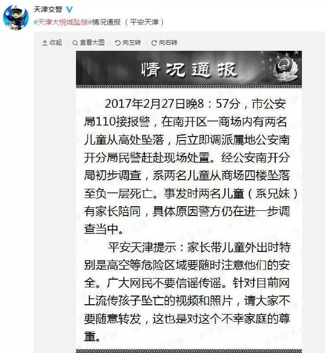

在此，特别提醒各位家长，出门一定要保护好孩子！同时，也请家长们稍微花点时间了解一下带孩子逛商场可能会遇到的安全隐患：
新闻动态
SUNROSE NEWS两孩子从商场4楼坠楼身亡！了解这些安全隐患，切勿让悲剧重演...
来源：admin 发布时间：2017-03-07 15:51:43
2月27日21时40分许，天津大悦城发生悲剧，两名儿童从楼上家长怀中掉落地下负一层。
据了解，事发时父亲抱着两个孩子从4楼往下看，其中一儿童不慎坠落，在父亲试图拉拽掉下的孩子时候，另一名儿童不幸也发生坠落。
两名坠楼儿童男孩大约5岁、女孩大约2岁，均头部重创。两个小小的身体躺在血泊中，现场十分凄惨。

两个孩子是从四楼玻璃护栏处坠落身亡的，事发后，警方第一时间赶往大悦城出事地点封锁现场，确认孩子死亡后已经安排车辆将孩子尸体从现场运走。孩子如何从楼上坠落目前还等待确认。
孩子的父母已经崩溃。失去孩子会痛苦一辈子，他们都会活在自责中。谁也不希望意外发生，没有一位父母不爱自己的孩子！
自动电梯
危险原因：乘坐自动电梯通常要避免孩子的手或小臂被卡在电梯门里。传感器探测到物体时，大多数电梯门都会开。但由于孩子的手太小，传感器可能探测不到。
玻璃门
危险原因：现在的商场大多都有落地玻璃门，小孩子总在商场里奔来跑去，容易忽略透明的玻璃门，孩子的手如果被厚重的玻璃门夹到，后果也不堪设想。
柜台边角
危险原因：商场里柜台的有些边角锐利坚硬，高度往往会和孩子的身高相仿，孩子容易碰撞到头部。
光滑的地板
危险原因：商场里的地板大多采用石料或复合地板，表面都很光滑，如果刚好清洁过，更容易导致孩子跌倒。
家电柜台
危险原因：这不是玩笑，真的会有顽皮的孩子把自己关在冰箱里。另外家电柜台的电线或开关较多，对孩子来说也比较危险。
护栏
危险原因：商场里常有一些装在玻璃窗边的护栏，用来隔离楼梯、电梯或柜台，有可能成为导致孩子高空坠落的安全隐患。
小编总结了以上可能存在的安全隐患，望家长们时刻注意，让危险远离孩子们！
现在让我们回到事件本身。当悲剧发生后，很多人呼吁不要谴责当事家长，他们一定是很爱孩子的，他们内心的煎熬常人无法想象，我们唯一能做的，就是祈祷孩子在天堂里没有伤害，无忧无虑……
然而，这种想法是对的吗？
父母很难过，所以他们就不用负法律责任了？
酒驾的时候，把人撞死了，司机也一定很难过，他不是故意要撞死人的，所以他就不用负法律责任了吗？
首先，这是监护人失职，而不是意外。
在中国，因为是孩子的亲生父母，就容易被免责。
即使少数人会被起诉，但家属原谅，司法机构也就表示同情了。
引用华东政法大学姚教授说的，“父母法律责任越小，孩子越危险。做父母太安全了，孩子们就难免遭殃。”
希望天津大悦城这件事，留给社会的，不仅仅惋惜和同情，而是让大家警醒，尤其是所有家长都要更好地履行监护人的职责。